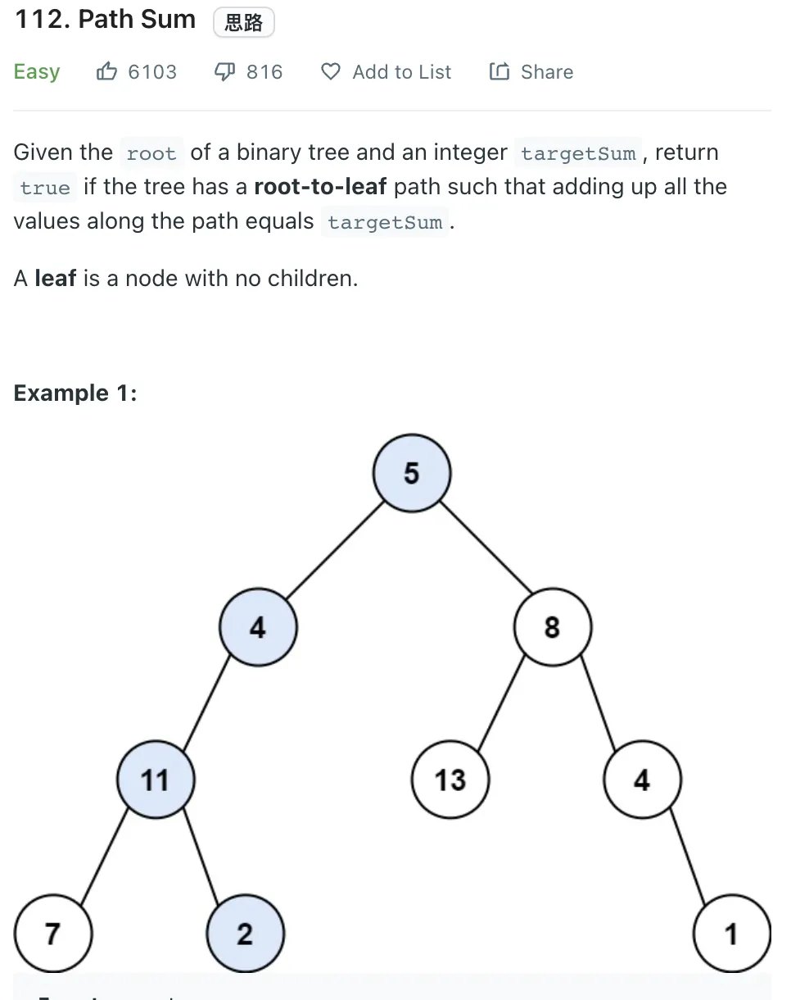
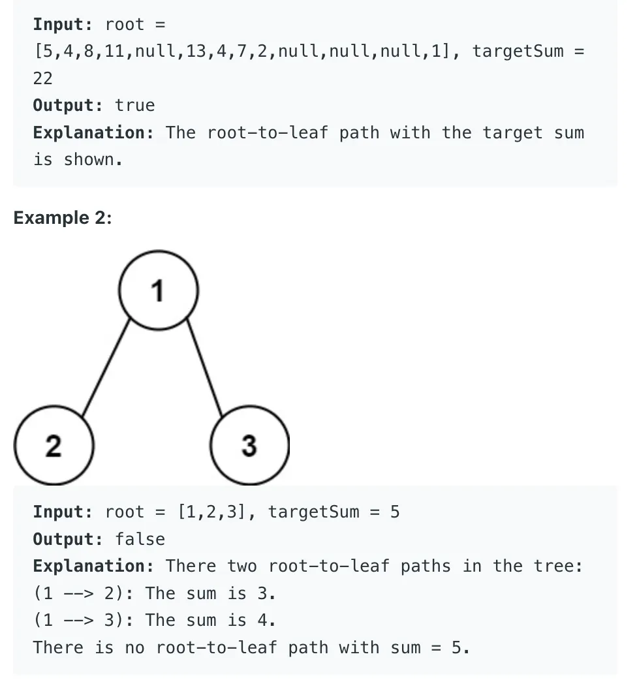

112. Path Sum
Question


✍🏽 My Solution - using Queue
Runtime: 1 ms, faster than 62.90% of Java online submissions for Path Sum. Memory Usage: 42.1 MB, less than 94.24% of Java online submissions for Path Sum.
class Solution {
private class Pair {
int curSum;
TreeNode root;
public Pair(int curSum, TreeNode root) {
this.curSum = curSum;
this.root = root;
}
}
public boolean hasPathSum(TreeNode root, int targetSum) {
if (root == null) return false;
Queue<Pair> queue = new LinkedList<>();
queue.offer(new Pair(root.val, root));
while (!queue.isEmpty()) {
Pair cur = queue.poll();
TreeNode curNode = cur.root;
int sum = cur.curSum;
if (curNode.left == null && curNode.right == null) {
if (sum == targetSum) {
return true;
}
}
if (curNode.left != null) {
queue.offer(new Pair(sum + curNode.left.val, curNode.left));
}
if (curNode.right != null) {
queue.offer(new Pair(sum + curNode.right.val, curNode.right));
}
}
return false;
}
}
🧠 Thought Process
- What is the time/space complexity of my solution? How do I know?
- time: O(n)
- space: O(n)
Solution #1 [Recursive]
Runtime: 0 ms, faster than 100.00% of Java online submissions for Path Sum. Memory Usage: 43.5 MB, less than 60.60% of Java online submissions for Path Sum.
class Solution {
public boolean hasPathSum(TreeNode root, int targetSum) {
if (root == null) return false;
if (root.left == null && root.right == null) {
return targetSum == root.val;
}
return hasPathSum(root.left, targetSum - root.val) || hasPathSum(root.right, targetSum - root.val);
}
}
Explanation (in my words)
- How does their solution work?
- 输入一个根节点，返回该根节点到叶子节点是否存在一条和为 targetSum 的路径
- if(root.left == null && root.right == null) 表示我們找到了一個葉子節點
- 前序遍歷：
5
4
11
7
2
8
13
4
1
Solution #2 [preorder traverse]
Runtime: 1 ms, faster than 63.37% of Java online submissions for Path Sum. Memory Usage: 43.6 MB, less than 52.66% of Java online submissions for Path Sum.
class Solution {
public boolean hasPathSum(TreeNode root, int targetSum) {
return dfs(root, 0, targetSum);
}
private boolean dfs(TreeNode root, int curSum, int targetSum) {
if (root == null) return false;
curSum += root.val;
if (root.left == null && root.right == null) {
return curSum == targetSum;
}
return dfs(root.left, curSum, targetSum) || dfs(root.right, curSum, targetSum);
}
}
Explanation (in my words)
- How does their solution work?
- 前序遍歷
- 不斷地往左遍歷
- What is the space/time complexity of their solution?
- time:O(n)
- space: O(h)
Solution #3 [preorder Iterative]
Runtime: 3 ms, faster than 8.33% of Java online submissions for Path Sum. Memory Usage: 43.9 MB, less than 36.66% of Java online submissions for Path Sum.
class Solution {
private class Pair{
int curSum;
TreeNode node;
public Pair (TreeNode node, int curSum) {
this.node = node;
this.curSum = curSum;
}
}
public boolean hasPathSum(TreeNode root, int targetSum) {
if (root == null) return false;
Stack<Pair> stack = new Stack<>();
stack.push(new Pair(root, root.val));
while (!stack.isEmpty()) {
Pair cur = stack.pop();
TreeNode curNode = cur.node;
int sum = cur.curSum;
if (curNode.left == null && curNode.right == null && sum == targetSum) {
return true;
}
if (curNode.right != null) {
stack.push(new Pair(curNode.right, sum + curNode.right.val));
}
if (curNode.left != null) {
stack.push(new Pair(curNode.left, sum + curNode.left.val));
}
}
return false;
}
}
Solution #4 [preorder Iterative - two stack]
Runtime: 5 ms, faster than 5.60% of Java online submissions for Path Sum. Memory Usage: 44 MB, less than 23.01% of Java online submissions for Path Sum.
class Solution {
public boolean hasPathSum(TreeNode root, int targetSum) {
if (root == null) return false;
Stack<TreeNode> stack = new Stack<>();
Stack<Integer> sums = new Stack<Integer>();
stack.push(root);
sums.push(targetSum);
while (!stack.isEmpty()){
TreeNode cur = stack.pop();
int path = sums.pop();
if (cur.left == null && cur.right == null && path == cur.val){
return true;
}
if (cur.right != null) {
sums.push(path - cur.val);
stack.push(cur.right);
}
if (cur.left != null) {
sums.push(path - cur.val);
stack.push(cur.left);
}
}
return false;
}
}